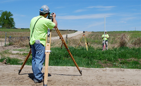
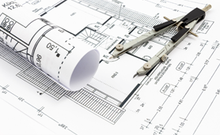
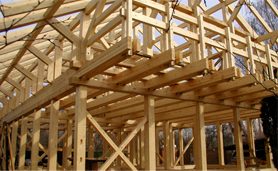
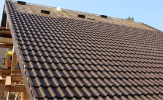
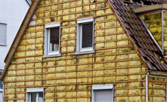
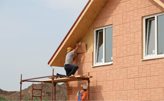
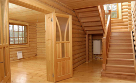
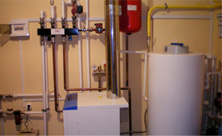
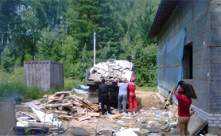

как мы работаем
Процесс строительства загородного жилого объекта является многоступенчатым и предполагает наличие определенного перечня этапов, следующих один за другим или идущих параллельно друг другу. Грамотное формирование плана работ выступает залогом успешной реализации проекта и завершения строительных работ в срок. Компания «KK Construction»
-
Подписание договора
Встреча с клиентом в офисе и согласование всех параметров реализации проекта:
- Определение стоимости строительства;
- Достижение договоренности по срокам строительства;
- Определение условий договора и основных прав и обязанностей сторон;
- Подписание договора.
-
Выезд на участок под застройку
Детальное составление проектно-сметной документации предполагает выезд специалиста – картографа на участок для:
- Анализа структуры грунтов;
- Определения перепада высот на участке;
- Анализа необходимости дренажа и соответствующих инженерных работ;
- Детализации работ по устройству въезда;
- Оценки необходимости проведения отсыпки участка.
 -
Проектирование
Проектирование – один из самых важных этапов в реализации проекта. Он предполагает формирование целостного видения будущего дома и согласование всех необходимых параметров работ:
- Площади и архитектурные особенности дома;
- Определения этапов строительства и их последовательности;
- Перечня используемых материалов;
Сложность конкретных конструктивных решений определяется и согласовывается с заказчиком.
 -
Возведение каркаса
Монтаж каркаса будущего дома или любого другого объекта – важнейший этап в любом строительстве. Каркас определяет надежность и устойчивость конструкции, позволяет создать прочную основу строения. Для каркасных домов он является определяющим элементом будущей конструкции и позволяет придать дому определенную форму и обозначить этажность.
В работе используем:
- Сухой строганый материал из высококачественной древесины;
- Оцинкованный крепеж – дает повышенную прочность, надежность и долговечность конструкции;
- Профессиональный инструмент (аккумуляторный нейлер) – обеспечивает высокую скорость и точность сборки;
- Программный пакет SCAD для расчетов.
 -
Установка кровельного покрытия
Монтаж кровельного покрытия осуществляется опытной бригадой кровельщиков с использованием цельных листов металлочерепицы толщиной до 0.50 мм и длиной до 6 м. Монтаж происходит с помощью кровельных саморезов, устанавливаемых под волну черепицы для эстетичного внешнего вида.
 -
Утепление дома
Утепление домов осуществляется с использованием теплоизоляционных плит. Монтируются плиты в соответствующие проемы стоек в разбежке стен, что позволяет создать плотное примыкание утепляющего покрытия к каркасу дома и обеспечить хорошую теплоизоляцию и высокую энергоэффективность дома. Минимальная итоговая толщина теплоизоляционного покрытия – 200 мм.
Затраты на отопление в наших домах на 50-70% ниже, чем в домах со стандартным утеплением! -
Внешняя отделка
Внешняя отделка – создание внешнего вида вашего дома. Она должна отражать вашу индивидуальность и соответствовать общей стилистике дома и окружающему природному пространству.
Мы предлагаем различные варианты внешней отделки:
- Имитация бруса;
- Доска-вагонка «Американка»;
- Планкен;
- Доска «Шале»;
- Комбинированная отделка;
- Штукатурка/покраска;
- Блокхаус;
- Фасадные термопанели.
 -
Внутренняя отделка
Внутренняя отделка – создание внутреннего интерьера вашего дома. Работы осуществляются на базе индивидуального дизайнерского проекта, создаваемого с учетом всех пожеланий заказчика.
Внутренняя отделка предполагает:
- Монтаж внутреннего покрытия стен (вагонка, имитация бруса);
- Установку дверей и внутренних перекрытий;
- Монтаж полового покрытия;
- Монтаж натяжных потолков;
- Облицовка лестниц и внутренних перекрытий.
 -
Инженерные решения и коммуникации
Каркасная технологиz строительства значительно облегчает прокладку коммуникаций и установку необходимых инженерных систем. Полости, образующиеся в результате конструктивных особенностей каркасного строительства, позволяют «спрятать» коммуникации, не нарушая внутренней гармонии пространства. Каркасная технология также позволяет совместить монтаж электропроводки с последними этапами работ по возведению конструкции дома. В итоге общий срок реализации проекта существенно сокращается.
В рамках этого этапа мы осуществляем:
- Монтаж канализации;
- Прокладку электропроводки и телефонных кабелей;
- Водоснабжение и водоотведение.
 -
Очистка участка от мусора
Завершающей стадией реализации проекта выступает очистка участка от накопившегося строительного мусора и вывоз его на специальный полигон для утилизации.
 -
Сдача готового проекта
Вы получаете готовый дом и можете сразу же заселяться!
Сроки строительствам
Очистка участка
2-7 дня
Включает подготовительную очистку перед началом строительства (снос объектов, вырубка деревьев, устройства въезда и дороги к участку и уборку накопившегося в итоге мусора
Монтаж фундамента
5-30 дней
Монтаж фундамента – необходимый процесс, занимающий в среднем до 10 дней (включая земляные работы). После монтажа также требуется выдержать период «Усадки», занимающий до 2-х недель.
Формирование каркаса
1-1,5 месяца
Этот этап предполагает монтаж несущих конструкций (каркаса) и укладка кровли (кровельного покрытия). Длительность зависит от сложности конструкции. Возможно параллельная прокладка инженерных систем и коммуникаций.
Внешняя отделка
20 дней
По завершении укладки кровли бригада приступает к внешней отделке (установка дверей, окон, обустройство балконов, террас и других пристроек). Работы занимают в среднем до трех недель.